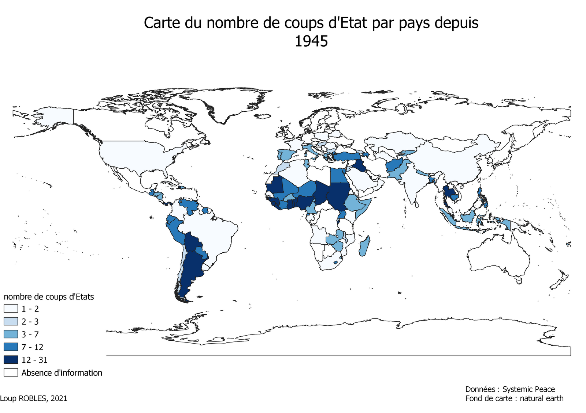
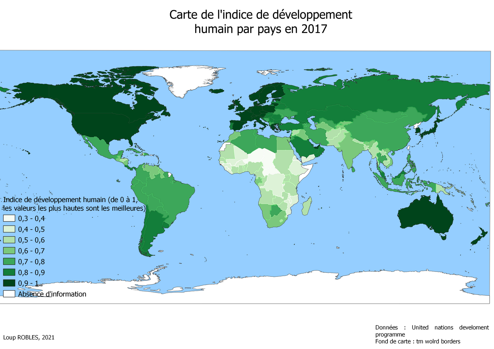

Loup ROBLES

La gouvernance représente « la manière dont le pouvoir est exercé dans la gestion des
ressources économiques et sociales d'un pays pour le développement » (WolrdBank 1992). En d'autres termes, la gouvernance c’est comment un pays exerce son autorité sur le bien
commun, dans une optique de développement.
On recense 6 indicateurs de la gouvernance :
Le développement d'un pays est conditionné par une multitude de facteurs dont l'instabilité politique. Cet indicateur comprend la propension d'un pays à changer régulièrement de gouvernement, de chef d'Etat, ...
Il comprend des sous-indicateurs comme le nombre de coups d'Etat, la généralisation des fraudes éléctorales, ... Et s'oppose à un autre indicateur qui est la stabilité politique.
Pour étudier cet indicateur (stabilité/instabilité politique), nous avons étudié dans un premier temps les tensions politiques puis les autres tensions internes qui gênent la stabilité/l'instabilité des pays.
La durée des mandats est un des indiacteurs clés nous permettant de comprendre la nature
politique des pays. Grâce à lui, on peut repérer les pays qui changent (trop) souvent de
gouvernement et ceux qui ne changent que très rarement.
On voit sur cette carte que les pays de la Triade (plus largement Amérique du Nord,
Europe occidentale et Japon) ont des moyennes de durée de mandats qui varient entre 1 et
5 ans ou entre 5 et 8 ans.
Les pays d’Amérique du Sud qui semblent changer de gouvernement
régulièrement (la durée de mandats n’excède que très rarement les 5 ans). Pour les pays
comme la Bolivie, l'Équateur, l’Argentine….. La durée moyenne des mandats est de 2 ans
donc très courte et est de 3 ans pour le Brésil.
Les pays asiatiques et d’Asie centrale avec le Kazakhstan et l'Ouzbékistan détiennent
une durée moyenne de mandats records de 25 ans. Mais ce chiffre est dû au contexte politique
de la région (bloc de l'Est). Dans la même région, la Russie et la Chine présentent également des moyennes de durée
de mandats plutôt élevées, c’est encore une fois dû au contexte historique de la région.
Enfin, en Afrique on observe des situations différentes : dans la bande saharienne, la
moyenne de durée des mandats est comprise entre 1 et 8 ans alors qu’en Afrique centrale
elle est plus comprise entre 8 et 20 ans.
Cette carte ci-dessus qui montrent la durée des plus longs mandats par pays, mis en
parallèle avec la carte précédente, permet ici de mieux représenter la notion de stabilité
politique. Ici le terme stabilité désigne le non-changement régulier de chef d'État. Stabilité qui
est souvent aussi néfaste pour le développement que l’instabilité car elle implique souvent de la corruption.
Pour compléter cette partie sur les tensions politiques, nous nous sommes interrogés sur les facteurs politiques qui peuvent freiner le développement d’un pays et en particulier sur les coups d'État. Nous avons donc réalisés une carte montrant le nombre de coups d'État par pays depuis 1945.
On peut considérer qu'au-delà de cinq coups d’Etats répertoriés pendant ces 60 dernières années, les conséquences sur le développement sont sévèrement impactées. Les régions du monde les plus concernées sont, l'Amérique du Sud, l'Afrique centrale ou encore quelques pays asiatiques.
Après avoir étudié l’effet des phénomènes politiques sur le développement, notre attention
se porte désormais sur les tensions internes que subissent les pays et plus particulièrement
les pays du Sud. Parmi ces tensions, qui sont nombreuses, nous avons choisi de nous
attarder sur trois d’entre elles :
- Les tensions ethniques
- Les tensions religieuses
- Les tensions linguistiques
- La menace terroriste
Ces fractions peuvent représenter des freins importants dans le développement d'un pays. Elles posent problèment dans la gouvernance : comment gouverner un pays qui habrite plusieurs ethnies avec chacune leurs propres cultures et leurs prorpres langues ou dialectes sans créer de sentiment de marginalisation chez aucune de ces ethnies ? Pour le cas de l'Afrique c'est une des conséquence de la colonisation et qui a redéssinée les frontières des pays sans prendre en compte aucune de ces problématiques.
En plus de compliquer la gouvernance ces fractions peuvent mener à des tensions et voir même à des guerres comme le montre la carte des guerres ethniques depuis 1946.
Souvent liés aux tensions religieuses ou pour revendiquer des idéologies politiques, les ”incidents terroristes” freinent eux aussi le développement des pays. Les chiffres divergent selon les recensements et la définition que chacun a du terme “d’incident terroriste” (arme utilisée, nombre de morts, …) mais quoi qu’il en soit, les chiffres pour certains pays sont vertigineux.
Sur l'animation ci-jointe on voit que la quasi totalité des actes terroristes de ces 50 dernières années sont localisé dans une zone très concentré : le moyen-orient avec l'Iraq, le Pakistan et l'Afghanistan qui comptabilisent à eux trois 30% des incidents terroristes ayant eut lieux entre 1970 et 2017.
Maintenant que nous avons étudié tous ces indicateurs, on peut comparer leurs résultats dans chaque pays avec les résultats des mêmes pays dans des indicateurs de développement (IDH, PIB, ...) et pour finir, confronter ces résultats avec une carte des régimes politiques.
 Les pays où l’IDH et le PIB sont faible sont globalement les pays centre-africains, sud-américains et asiatiques (sauf la Chine et la russie pour le PIB/habitant). Si on compare ces résultats avec les indicateurs observés plus haut, on voit que ce sont les memes pays qui ont soit, de la stabilité ou de l'instabilité politiques (moyenne de durée des mandats politique depuis 1945 soit très faible soit très élevée, présence régulière de coups d'Etats, ...).
Ce sont aussi les mêmes pays qui subissent le plus de tensions interne. Les fractions ethniques, linguistiques et religieuses sont très présente en afrique par exemple. Les incidents terroristes sont quasi-exclusivement localisés au Moyen-Orient et au Sahel.
Une corrélation entre stabilité/instabilité politique et le développement d'un pays existe
Maintenant qu'une corrélation entre Stabilité/instabilité politique et le niveau de développement d'un pays est établis, on peut vérifier si certains régimes politiques conditionnent cette stabilité/instabilité et donc indirectement, s'ils conditionnent le bon développement d'un pays.
En 2015, la plupart des pays qui ont un bon niveau de développement utilise un régime démocratique. Cela ne signifie pas que démocratie implique bon développement d'un pays dans 100% des cas, la réalité est plus complexe. Mais la démocratie est sensé empêcher de nombreux freins au développement (changement régulier de gouvernement, corruption...).
created with
Website Builder Software .